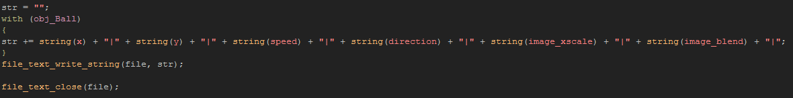

Tutorial
Page 9 of 11
Writing To A Text File
Since the room text says that pressing "S" saves the game, open up the object labelled obj_Level_Save_Control and add a keypressed event for the "S" key, then add a code block and in
that write the following:
As you can see, we first create some local variables for use, then open a file for writing (creating it if it does not already exist) and store the file id in one of the local variables. The other variable we
prepare as an empty string, then add the player x and y coordinates to it, but separating them with "|" symbols. Why do we do this? Well, when it comes to loading the room again from the text file, we need to
have some way to know what values we are getting out, and so we will parse the string looking for these symbols. We could just write each value to a new line, and for small amounts of data
this is easier, but for large amounts it is often better to keep things "together" in one chunk of data like this.
The string we have created will look something like this when saved:
125|376|
and we can save it with the following lines of code:
This will write the line of text we have created to the text file, then add a line break to the end. This line break can be detected when reading from the file and is an excellent way to "break up" data into more
manageable chunks when saving and loading.
We will now do the same for the wall objects too, using the following code:
Again, like for the player object, we are only saving the position of each wall to the string (actually, each block is writing its own position to the string, as the "with" here will loop through every single instance
for us), then we are writing the string to a file, followed by a new line.
The final thing to save is the information on the ball objects. Remember, we need to store more things for them to be able to re-create them correctly when loading, but its simply a case of writing these extra
values to the save string exactly as we did for the x/y positions of the previous objects:

As with the wall objects, we have the ball objects add their information to the save string, then we write this string to the file. However this time we don't write a new line (no need), we close the file instead, as we
have no need of it any more.
One thing to note here is that you can check the contents of the save file at any time by running the game and going to the appdata local folder and looking
for the folder with the name of your game. The save file will be in there. You can also use the function show_debug_message() at various stages throughout the saving code block to print the strings
being saved to the GameMaker:Studio console.
Well, that's the saving done, but we can't really see anything happening from testing can we? For that we now need to program the loading part...
Click on the Next button to go to the next page of the tutorial.